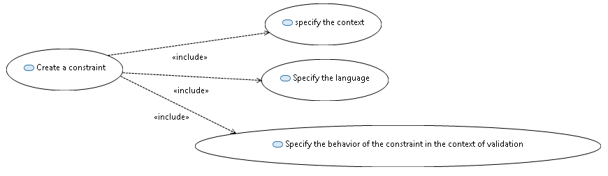
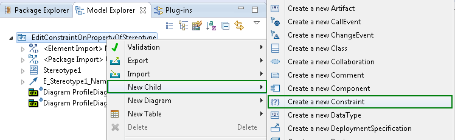
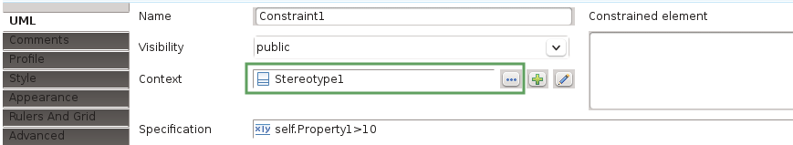
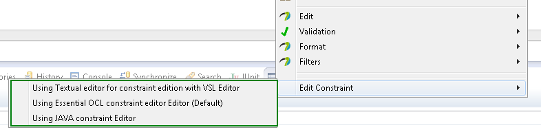

Create and edit constraints
Creation and edition comprises includes multiple use case, namely creation of a constraint and its context and setting a specification.

Define a constraint and its context
Papyrus supports the creation of UML constraints. To create a constraint, and associated context, do one of the following:
- Within any Papyrus diagram select the constraint tool from the palette and then press the mouse button at the position where you want to create the constraint on the diagram canvas. The constraint should then be connected to another element on the diagram, via a ContextLink relationship, by clicking on the target element in the diagram (in two-click mode). If you are in one-click-mode (connection tool preference), press the mouse button on the constraint and keep it pressed until the context object is selected. This ContextLink relationship defines the context for which the constraint will be evaluated.


The constraint and context-link tools in the palette
- Within the Model Explorer via right clicking a model element and then selecting New Child -> Create a new Constraint. The context is automatically set to the parent of the constraint. The context can be changed via the Properties View if required.

Create a constraint via the model explorer

Set the context via the property view
Define constraint specification
Each constraint has a specification containing a condition. Whereas it may be an arbitrary value specification, such as a StringExpression or LiteralInteger, it is in most cases useful to define an opaque expression consisting of a pair of language and body (a list of these pairs). The constraint body may be written in at least OCL, JAVA, or natural language. In order to make constraints evaluable by Papyrus the constraint must be written in either OCL or JAVA. To define a constraint's specification, first select a constraint on either a diagram or in the Model Explorer, then do the following:
- On the diagram open the default editor for constraints using the keyboard shortcut F2 or with a second click on an already selected constraint. The editor assume the language is OCL but this can be changed later via the Properties View. The constraint text is defined directly in the editor. The default editor can be controlled via the preferences.
- On the diagram select a specific editor via the context menu, as shown in the following screenshot.

Explicitly choose the editor for the constraint
Use the property view to create a new or open an existing specification, as shown in the following figure.
In the sequel, we assume that the specification is an opaque expression.
Open the specification via the property view
You can add the language, as in the following figure:

Specify a language.

Write the body of the opaque expression
This method is a bit more complicated, but gives the user full control over the opaque specification. In particular,
it is possible to enter more than one language, body pair (even if this is rarely needed).